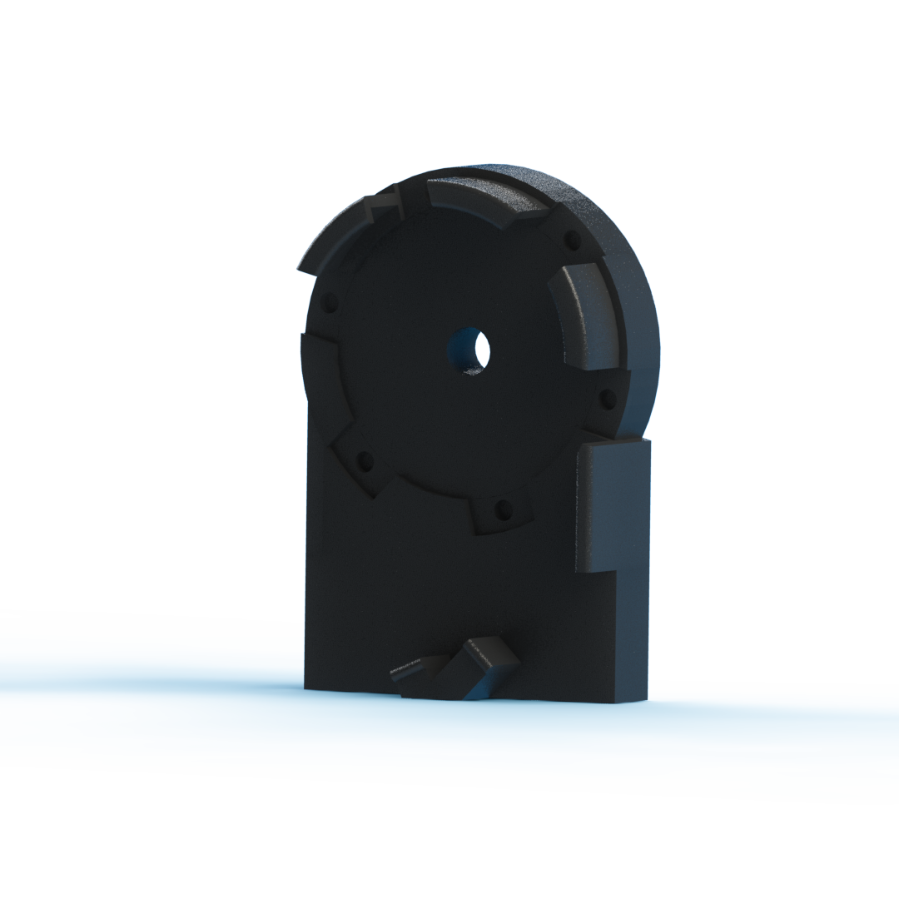

Wrench Manufactuing Automation
This was my final project in the MSR (Masters of Science in Robotics) program at Northwestern University. The project was to automate the production of the LoggerHead Tools Bionic Wrench.
The video shows a few jaws falling out of the wrench as the platform is lowered. This is unfortunately because the electromagnet I had broke a few days earlier and the part was on backorder. Usually the electromagnet holds the jaws in place during this part of the process. I created a new design that uses neodymium magnets instead of an electromagnet that you can see below, but didn't have time to test it.
Overview
The goal for this project was to continue to evolve the design created by Levi Todes (MSR '18) and add usability features like a magazine to store wrench jaws, a bowl descrambler to orient wrench jaws, and a movable platform for easy wrench placement.
There were three main components to this project, the structure which was made out of sheet metal, the magazine which was 3D printed and the bowl descrambler ramp which was also 3D printed. Each one of these parts went through many iterations along the design process. All of the parts were designed using SolidWorks and most were printed on the Ultimaker 3.
A PIC32MX250F128B was used to control the system, along with a DRV8834 stepper controller from pololu (for stepper motor control). The MPLab SNAP was used as the programmer and the code was in C.
Approach
Going into this project I knew there were three main areas that I wanted to target -- The wrench placement, jaw orientation process and jaw feeding process.
The wrench placement process in the previous design required the user to take off a drive gear, place the wrench in a 3D printed holder and then reattatch the gear to the assembly using some magnetic latches as can be see on Levi's Repository.
My new mechanism uses a hinge to allow the wrench to be placed on in a horizontal orientation and then moved into a vertical orientation by just flipping the whole mechanism up. This can be done with a stepper motor and lead screw, but ultimately it was decided that its easy enough to do by hand.
For the jaw orientation process, there was not really any work already completed. For this I first used pieces of cardboard, metal and tape to try and knock the pieces off of the ramp that were in the wrong orientations. After getting an understanding of how to orient the pieces, I created a few 3D printed designs and tested them out until one worked. I then refined that design a few more times until the pieces would consistently drop in the correct orientation out of the bottom of the descrambler.
For the jaw feeding process I started by modifying Levi's electromagnet technique, which would use an electromagnet to pull the jaw into position and then shut it off, allowing the jaw to succumb to gravity and fall into place. Unfortunately, I found this method to be unreliable, so I switched to a more mechanical design. This second big design iteration used a rod on the bottom and a feeding mechanism on top to feed the pieces through a track and also control when they were allowed to fall out as well. The main issue with this design was that despite numerous design iterations, I couldn't get the pieces to feed without catching on the track walls and jamming up the system. For the final big design iteration, I decided to switch to a magazine type feeder that uses a vertical tube and a pushrod to feed out the pieces like a pez dispenser. This method worked far better than the others and allowed for easy integration with the bowl descrambler through a vertical tube.
Mechanical Design
The mechanical design part of this project was by far the hardest part. Many of the parts designed has complex geometries that required 11 hour + 3D print jobs per part. Because of this, a lot of analysis was done between part iterations to reduce "downtime" where I could not further refine the design. Although only a few key design iterations will be shown in this document, many smaller iterations took place on each part to enusre that the process ran smoothly and efficiently.Initial Designs
Because I was continuing work on another students' project, there were intial designs available for me to work off of. Right off the bat, I noticed two main areas of Levi's design that I wanted to improve upon and Professor Brown gave me one addition to make to the process as well. These three changes/additions became the backbone of my project and were:
- Overall Structure
- Feeding Mechanism
- Jaw Orientation.
Design Refinements
Overall Structure
At the start of the project I identified the structure as one of the main components that both wouldnt hold up to a manufacturing environment and could use some refinement to improve usability. Mainly, the old design was a little too flimsy (it was a prototype so this makes sense). To fix this issue, I came up with a new sheet metal pattern that I was able to cut out of aluminum using a waterjet and bend using a brake. It had relatively similar geometry to Levi's initial prototype, but the wrench would be placed on the inside, rather than the outside and the structure as a whole was bigger than the initial. Below is the new design, followed by a wrench holder mechanism further discussed below.

The new structure also has an important addition for usability. There is a middle panel that swings 90 degress from flat to vertical, allowing for easier wrench placement. The user can place the wrench in easily when it's in a horizontal mode and then the whole panel can be lifted up to interface with the jaw placement mechanism. Initially, this could be done using a stepper motor and lead screw, but ultimately it was decided that the user would be perfectly capable of doing this motion by hand so that was removed.
Embedded in this platform is the mechanism that rotates the wrench 60 degrees for each different jaw. This system is geared 2:1 so it has the required torque to rotate the wrench against gravity in its vertical position.
Feeding Mechanism
The jaw feeding mechanism was the second design refinement I chose to tackle. Levi's design used an electromagnet to pull jaws one by one through a 3D printed tube, and then cut off power to the electromagnet allowing the jaw to fall into place in the wrench. I ultimately discovered that the electromagnet was too unreliable to continue to be used. It ended up being a passive drive to get the jaws into position so that they could be attracted by the electromagnet as well.
I tried using the electromagnet in an initial design and found that it wasn't strong enough to reliably pull jaws to the correct positon. I tried different electromagnets as well and even tried building my own to the specs I wanted, but none worked reliably.
I decided that I wanted a driven mechanism for getting the jaws into position, and that I wanted to rely less on the electromagnet. My inital design for this iteration was a feeder wheel driven by a continuous servo on the top of the jaws that would use friction to push the jaws through, and a "droprod" on the botton that could be pulled back by a second regular servo. The drop rod part of this iteration worked really well, but the feeder wheel had many issues. As the jaws went under the wheel, one edge would tweak up, causing the chute to become jammed and not let any other jaws through. I made a few different iterations of this design with tighter tolerances to try and prevent this behavior, but it just didn't end up working right.
For the final major design iteration on the feeding mechanism I realized that the wrench jaws were almost the same size and shape as a pez. I used a pez dispenser as inspiration and created a magazine style feeding mechanism that used a rod driven by a servo to push evenly on the whole back side of the jaw. This prevented any of the tweaking motion that jammed up the previous design. It also reduced the number of servos required by one.


The angled wall knocks off all pieces that arent in a vertical orientation, and the sloped rail forces pieces that arent in the correct vertical orientation into a horizontal one, which causes them to get knocked off by the angled wall. The second longer wall with a slope at the end directs the pieces into the correct position to get picked up by the sloped rail. At the end, the box looking section is a funnel that funnels the pieces into a vertical magazine tube.
Other components
Actuators
A second stepper motor and drive board were added to drive the leadscrew and pull the platform to vertical, but those were since removed because it was decided to be unnecessary. A servo was also added that drives the rack for the magazine feeder design.
Electromagnet
An electromagnet was still used to hold the jaws in places as the platform is lowered to its horizontal position. Without the electromagnet, the jaws at the top of the wrench would fall out due to gravity on the way down. The electromagnet is embedded in the 3D printed wrench holder and is constantly on (run at 12V). However in the most recent version the electromagnet was swapped for 6 smaller neodymium magnets -- mainly because the electromagnet was always on and its wires would constantly get tangled.
Wrench Holder
The wrench holder also went through a few design iterations. Starting out with Levi's inital design, I hollowed out the back to make room for the electromagnet and simplified the design a little bit because some of the additional features from his original were no longer necessary with my new design.

In the final design iteration for this part, I used 6 neodymium magnets instead of the electromagnet to improve reliability and get rid of the wires coming off of the electromagnet which would often get tangled.
Electrical Design
This directory contains the eagle files that Levi created in his version of the device. My version did not modify his electronics besides the addition of a servo, the momentary addition of a second stepper motor and driver (which was later removed) and the removal of the electromagnet driver.
Microcontroller
For this project the PIC32MX250F128B was used as the control unit for the process. It was used to control the stepper motor and servo and in the past was used to control an electromagnet, but ultimately it was decided to keep that on full time.
The breakout schematic from eagle for the process is shown below, which shows the 3.3V regulator, pololu dual h-bridge, micro usb connector (for power) and MPLAB SNAP (for programming).

Stepper Motor Driver
The circuitry used to control the stepper motor is the Pololu MD20b chip. This chip is a breakout board for the DRV8825 which has two H-bridge drivers and a microstepping indexer, along with some protective circuitry. This chip allows the stepper to be simply controlled by 3 GPIO pins to control the step resolution (M0,M1,M2) and one pin set to output a PWM signal (STEP). This chip also allows for 3.3V logic to be used from the microcontroller while supplying the motor with the 12V necesarry to use it.
As can be seen in the code directory, pins M0, M1 and M2 are used to set the resolution at which the motor is controlled. Setting M0 and M1 high and M2 low sets the driver to control the motor in 1/8 step mode, meaning the 200-step-per-revolution motor now has 1600 microsteps per revolution. A PWM signal is sent to the STEP pin to drive the motor.
Servo
A servo was added to the electronics part of this project. The servo had three wires, red, black and white which were connected to 5V, GND and pin 6 on the PIC32, respectively. A PWM signal was outputted to pin 6 which allows for control over the servo position.
Overall Layout
Here is a picture of the final layout of the system on it's breadboards. The smaller breadboard is running off of 12V (from an external supply) and the larger one runs off of USB which is converted to 3.3V by the Pololu voltage regulator you can see in the top center.

Code
The MPLAB X IDE was used in this project to program the PIC32MX250F128B microcontoller. Code was written in C and programmed using the MPLab SNAP.
The code for this project is relatively straightforward with two main functions. One function is control of the servo by varying the PWM output on pin 6 of the PIC32. By changing the PWM, the servo will go to different positions. The other function is for movement of the stepper motor. This is done again through PWM. There are also four additional wires going to the Pololu DRV8834 board, three of which control microstepping and the last controls direction.
Overall, the code activates a 6X loop when a limit switch is pressed and each time it goes through the loop the wrench moves 60 degrees, the feeder pushes out a new jaw and the wrench wiggles twice to attempt to ensure that the jaws fall back into place. At the end of the loop, the mechanism swings back around 360 degrees in the opposite direction to get back to 0.